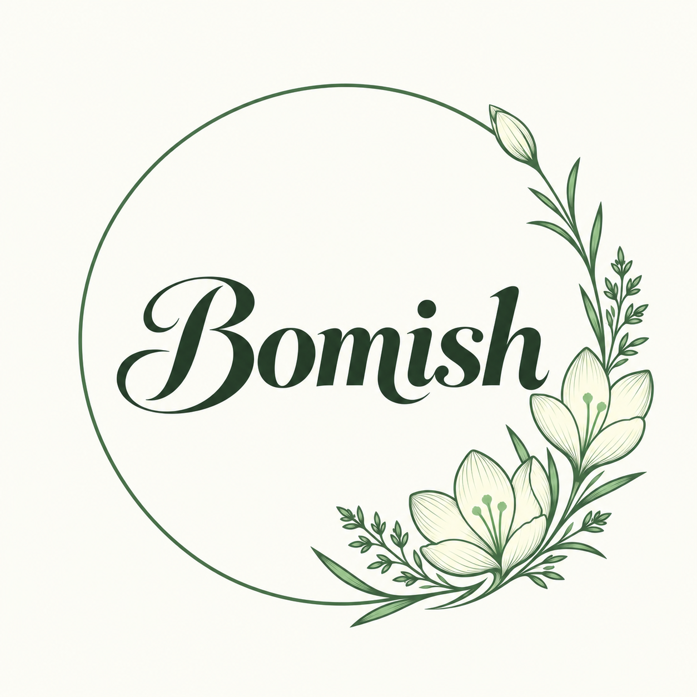
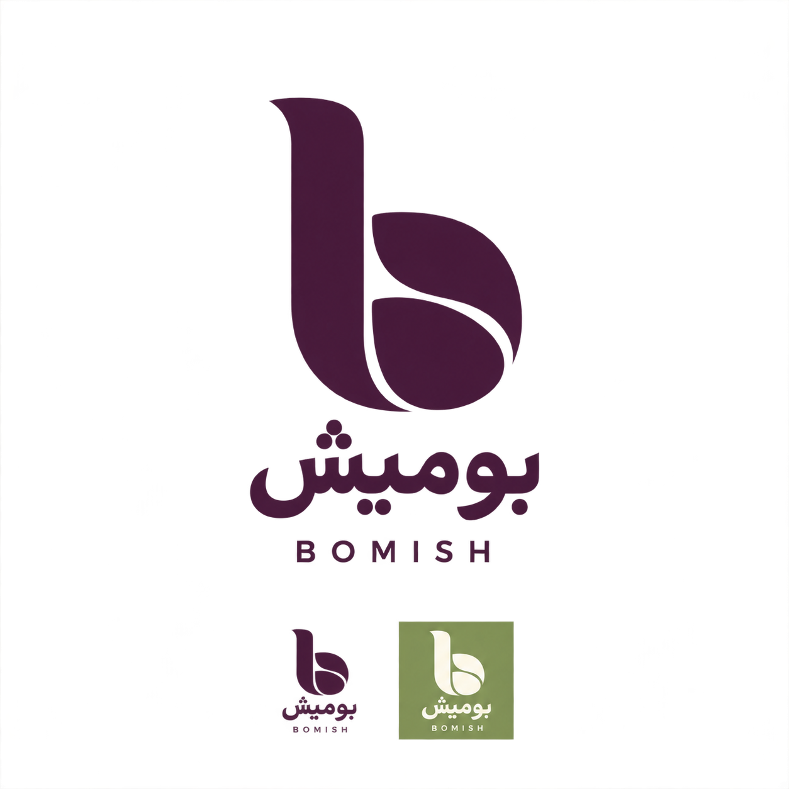
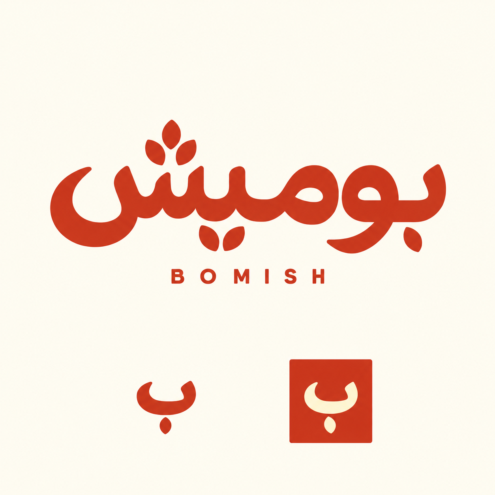
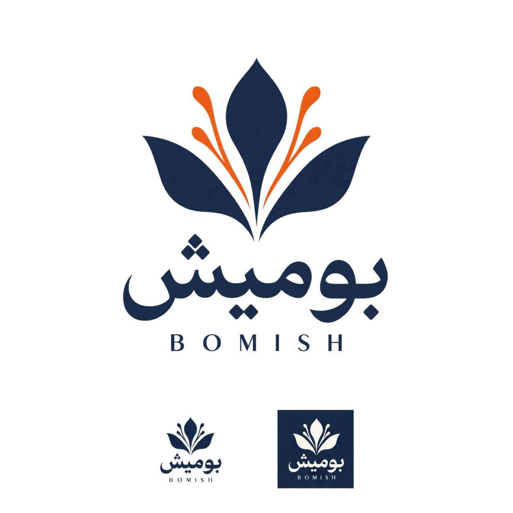
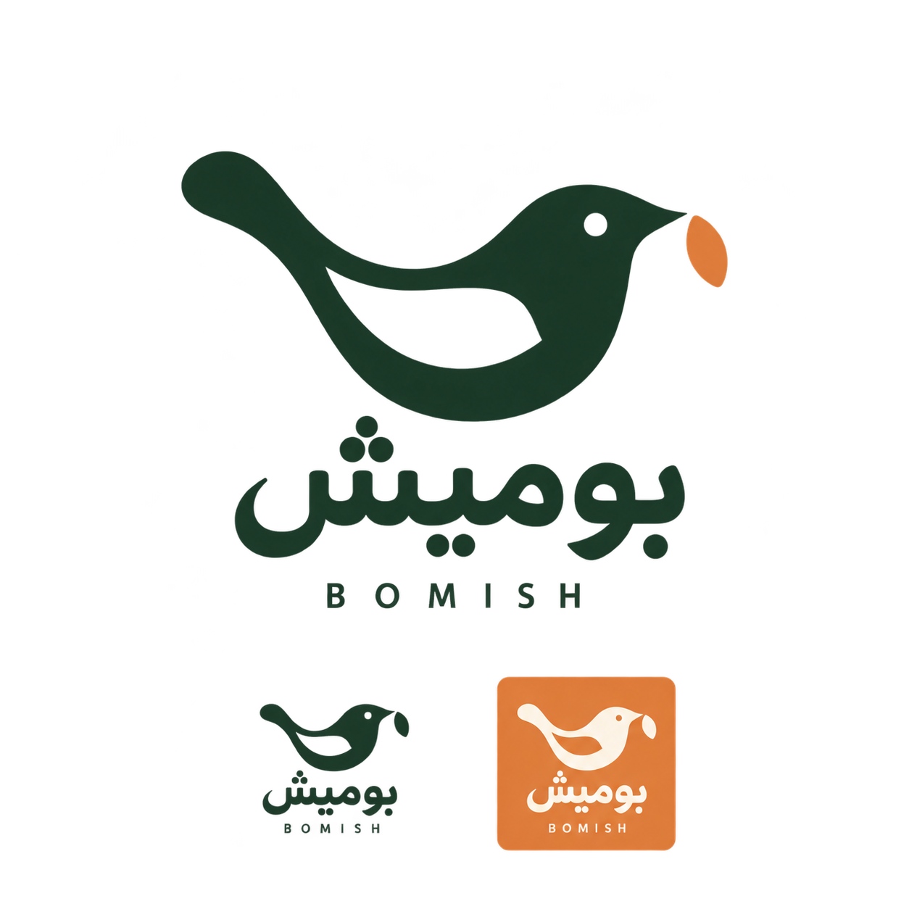
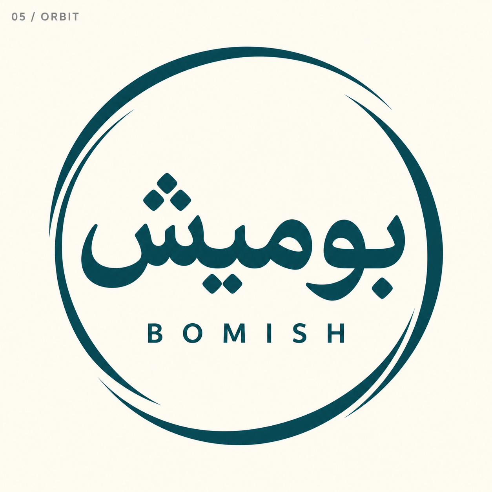
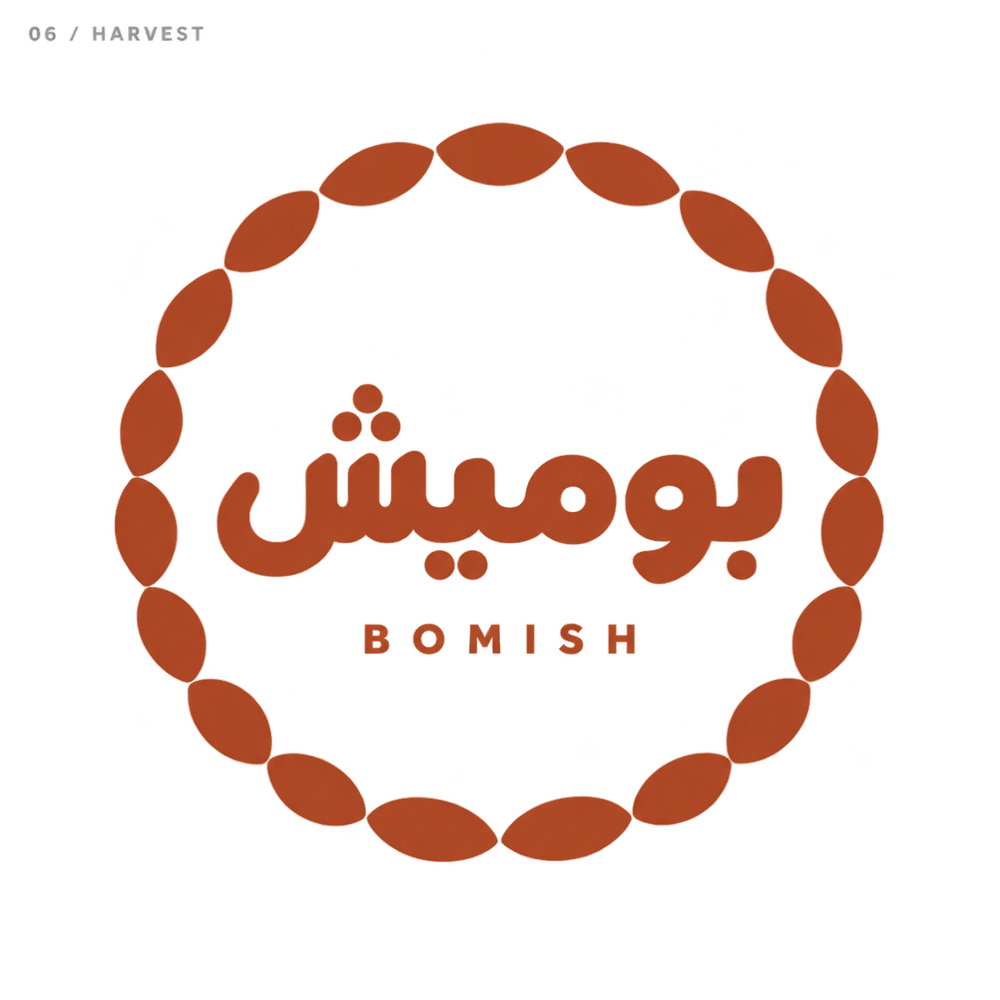
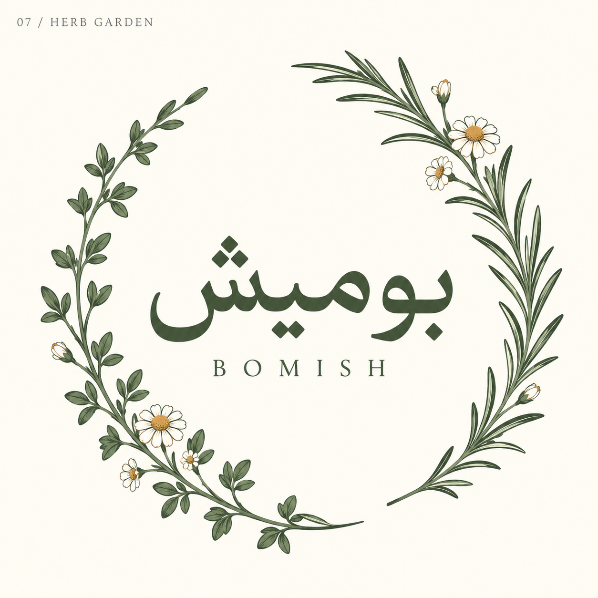
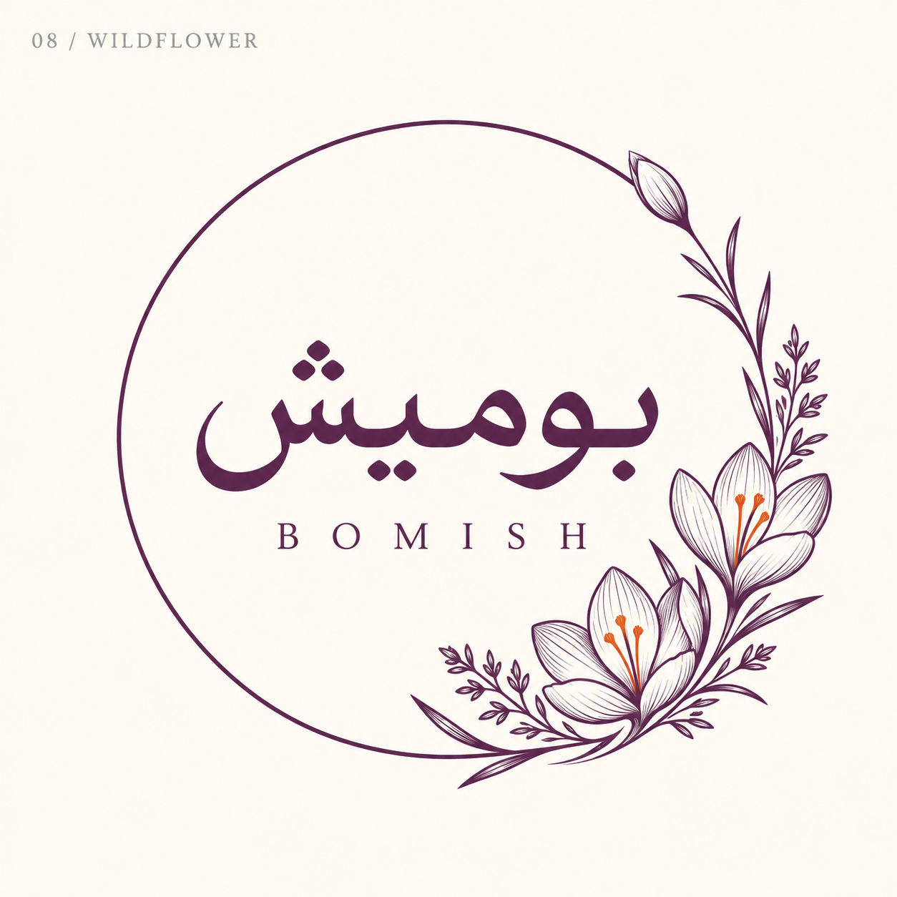
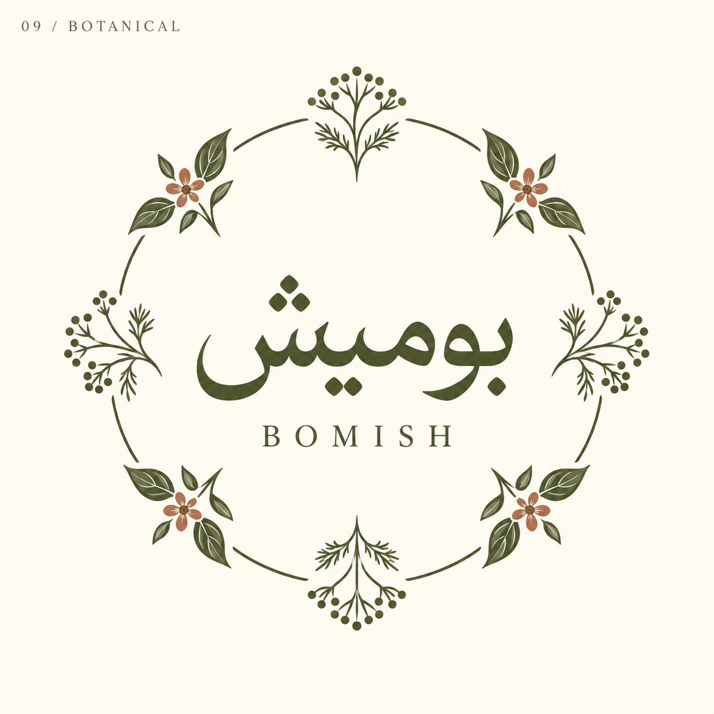

Logo explorations · October 2026

10 — Wildflower / English refinement

01 seed monogram

02 persian wordmark

03 saffron emblem

04 pantry bird

05 orbit circle

06 harvest circle

07 herb garden

08 wildflower orbit

09 botanical medallion